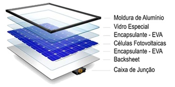
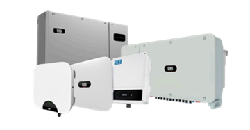
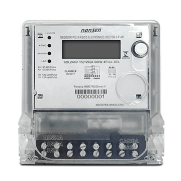
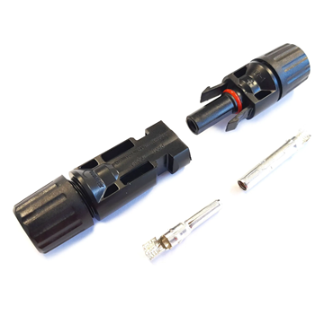

Estrutura de uma placa
As placas que geram a energia fotovoltaicas são compostas por diversos sistemas e componentes que trabalham em conjunto para fazer a transição de luz para energia. Os seus principais componentes são módulos fotovoltaicos, inversores solares, estruturas de fixação, medidor bidirecional e conectores.
Módulo fotovoltaico

Imagem de : Portal Solar
São os painéis constituídos por células fotovoltaicas que fazem a transição para energia fotovoltaica, inversores solares.
Inversor solar

Imagem de : SolarChio
Converte a corrente gerada pelos painéis para corrente alternada, que é a forma de eletricidade mais utilizada na maior parte das residências.
Estrutura de fixação

Imagem de : Janela & Cia
É a estrutura que suporta a placa em uma posição de maior eficiência e segurança
Medidor Bidirecional

Imagem de : mitratech
É o medidor de consumo da residência e a que é colocada na rede elétrica.
Conectores

Imagem de : Eletrolico
São os componentes dos cabos que garantem a conexão segura dos elementos do sistema.
Importância da seleção dos componentes
É necessário durante a seleção desse tipo de equipamento vermos a compatibilidade e a eficiência do equipamento, caso um equipamento não seja compatível ou talvez seja de má qualidade podemos perder a eficiência do painel, além de poder acabar acarretando a problemas futuros ao sistema elétrico.